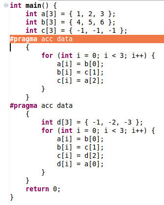
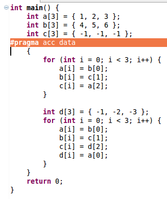

Merge Data Constructs
Use: Reduces the number of copy ins and outs down by combining data constructs, therefore increasing effciency.
Description: Combines two successive data constructs together.
Example:
- Select the first of the desired data constructs to be merged and choose Merge Data Constructs under the Refactoring menu.

- The resulting construct.

Restrictions:
- The second data construct must immediately follow the first.
- Both data constructs must be compound statements.